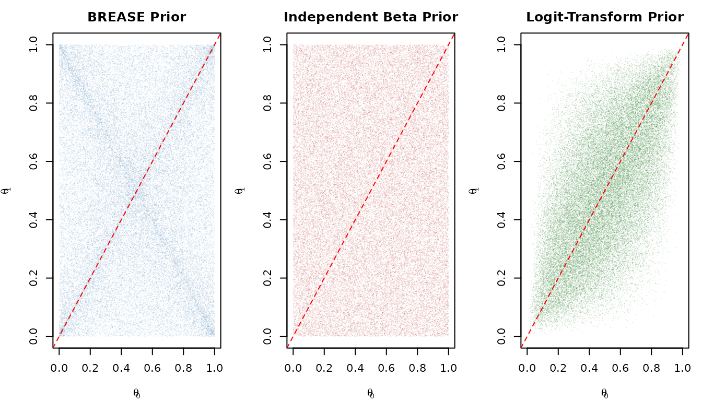
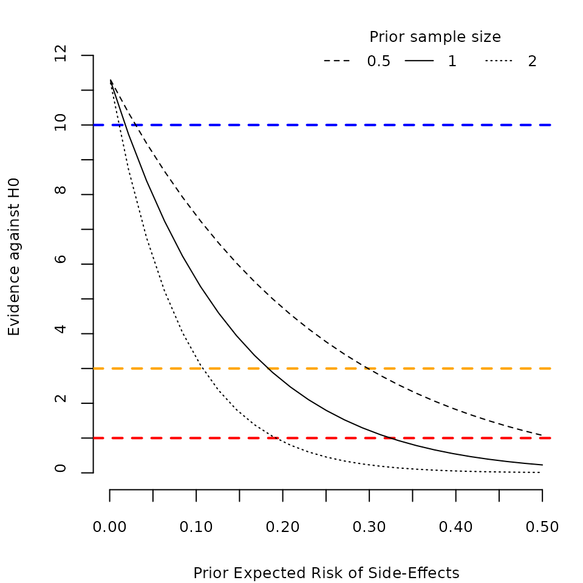
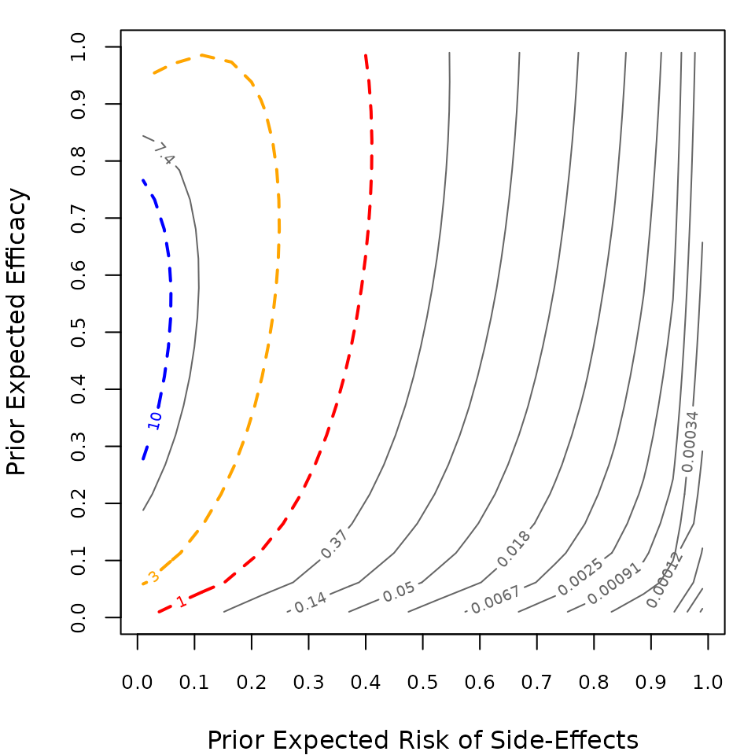
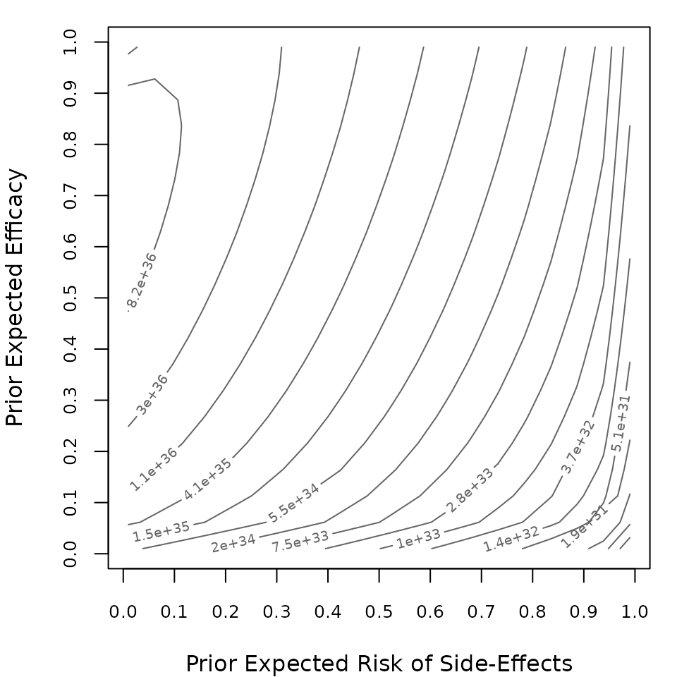
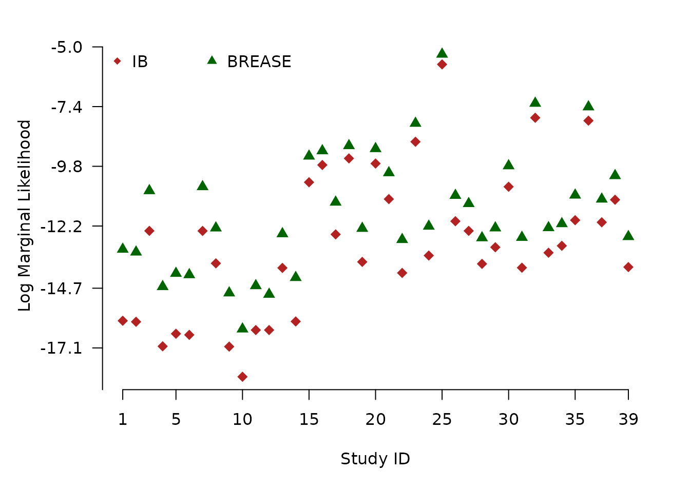
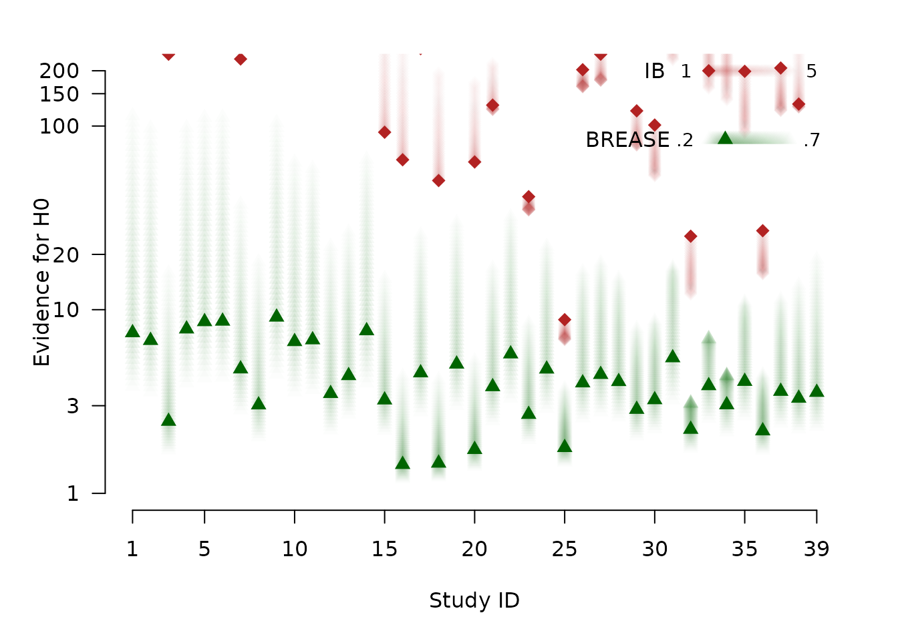
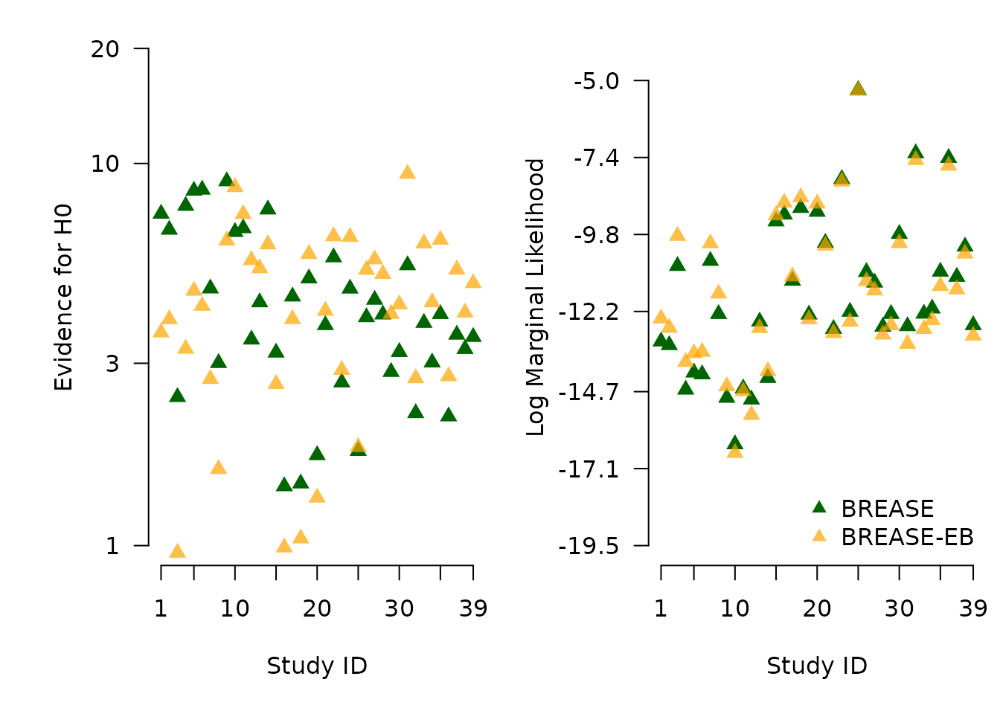
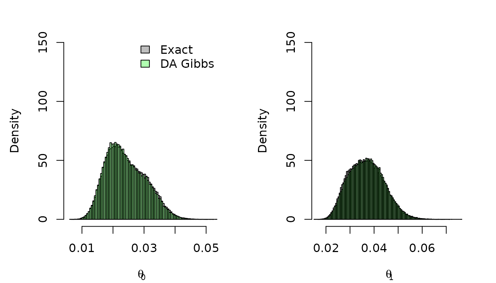

Replication of Irons and Cinelli (2025)
Nicholas Irons and Carlos Cinelli
2026-02-16
Source:vignettes/replication.Rmd
replication.RmdThis vignette replicates the main results and figures from:
Irons, N.J. and Cinelli, C. (2025). Causally Sound Priors for Binary Experiments. Bayesian Analysis. doi:[10.1214/25-BA1506](https://doi.org/10.1214/25-BA1506)
Replication code for the paper is also available at https://github.com/njirons/causally-sound.
library(brease)
#> brease: Causally Sound Priors for Binary Experiments
#> Details: Irons and Cinelli (2025). Bayesian Analysis.
#> https://doi.org/10.1214/25-BA15061. Prior Specification
The default BREASE prior is \(\text{BREASE}(1/2, 0.3, 0.3; 2, 1, 1)\), which places:
- A uniform (Beta(1,1)) prior on baseline risk \(\theta_0\)
- A Beta(0.3, 0.7) prior on efficacy \(\eta_e\) (centered at 0.3)
- A Beta(0.3, 0.7) prior on side-effect risk \(\eta_s\) (centered at 0.3)
The induced prior on \((\theta_0, \theta_1)\) exhibits dependence between the treatment arms.
par(mfrow = c(1, 3), mar = c(4, 4, 2.5, 1))
# BREASE prior
brease_samps <- sim_brease(50000)
plot(brease_samps$theta0, brease_samps$theta1,
pch = ".", col = adjustcolor("steelblue", 0.2),
xlim = c(0, 1), ylim = c(0, 1),
xlab = expression(theta[0]), ylab = expression(theta[1]),
main = "BREASE Prior")
abline(0, 1, lty = 2, col = "red")
# Independent Beta prior
ib_samps <- sim_ib(50000)
plot(ib_samps$theta0, ib_samps$theta1,
pch = ".", col = adjustcolor("firebrick", 0.2),
xlim = c(0, 1), ylim = c(0, 1),
xlab = expression(theta[0]), ylab = expression(theta[1]),
main = "Independent Beta Prior")
abline(0, 1, lty = 2, col = "red")
# Logit-Transform prior
lt_samps <- sim_lt(50000)
plot(lt_samps$theta0, lt_samps$theta1,
pch = ".", col = adjustcolor("darkgreen", 0.2),
xlim = c(0, 1), ylim = c(0, 1),
xlab = expression(theta[0]), ylab = expression(theta[1]),
main = "Logit-Transform Prior")
abline(0, 1, lty = 2, col = "red")
2. Aspirin and Myocardial Infarction
2.1 Data
The Physicians’ Health Study (1989) randomized 22,071 male physicians to aspirin or placebo and observed fatal myocardial infarctions (MI):
data(aspirin)
aspirin
#> y0 N0 y1 N1
#> 1 26 11034 10 110372.2 BREASE Analysis
# Default prior: BREASE(1/2, 0.3, 0.3; 2, 1, 1)
result <- brease(y0 = 26, y1 = 10, N0 = 11034, N1 = 11037)
result
#> Bayesian Analysis of Binary Experiment
#> Method: BREASE
#>
#> Data:
#> Control: y0 = 26, N0 = 11034 (rate = 0.0024)
#> Treatment: y1 = 10, N1 = 11037 (rate = 0.0009)
#>
#> Prior:
#> theta0 ~ Beta(1.00, 1.00) [mu0 = 0.50, n0 = 2.0]
#> eta_e ~ Beta(0.30, 0.70) [mue = 0.30, ne = 1.0]
#> eta_s ~ Beta(0.30, 0.70) [mus = 0.30, ns = 1.0]
#>
#> Posterior Summaries:
#> Baseline Risk (theta0) Mean: 0.00232 [0.00148, 0.0033]
#> Treatment Risk (theta1) Mean: 0.00105 [0.000512, 0.00177]
#> Risk Ratio (RR) Mean: 0.473 [ 0.2, 0.942]
#> Efficacy Fraction (EF) Mean: 0.527 [0.0578, 0.8]
#> Odds Ratio (OR) Mean: 0.473 [0.199, 0.942]
#> Risk Difference (RD) Mean: -0.00127 [-0.00242, -9.31e-05]
#>
#> Bayes Factor (BF10): 1.21
#> Bayes Factor (BF01): 0.823Posterior risk ratio (as percentage):
round(result$post.summaries["rr", ] * 100, 2)
#> mean med lw up
#> 47.33 44.06 19.96 94.22Bayes factor in favor of treatment effect:
round(result$bayes.factors$bf10, 2)
#> [1] 1.21With a more skeptical prior (\(\mu_e = \mu_s = 0.2\)), the 95% credible interval for the risk ratio already includes 1:
2.4 Bounds on Probabilities of Causation
brease_bounds(y0 = 26, y1 = 10, N0 = 11034, N1 = 11037)
#> $eta_s_lower
#> [1] 0
#>
#> $eta_s_upper
#> [1] 0.0009989109
#>
#> $eta_s_mid
#> [1] 0.0004994555
#>
#> $eta_e_lower
#> [1] 0.5927033
#>
#> $eta_e_upper
#> [1] 1
#>
#> $eta_e_mid
#> [1] 0.79635172.5 Sensitivity Analysis
side_plot(y0 = 26, y1 = 10, N0 = 11034, N1 = 11037)
sens <- bf_seq(y0 = 26, y1 = 10, N0 = 11034, N1 = 11037,
mus_seq = seq(0.01, 0.99, length = 20),
mue_seq = seq(0.01, 0.99, length = 20))
contour_bf(sens)
2.6 Comparison: Independent Beta
# Default IB with a = b = 1 (uniform)
ib_result <- brease_ib(y0 = 26, y1 = 10, N0 = 11034, N1 = 11037)
round(ib_result$post.summaries["rr", ] * 100, 2)
#> mean med lw up
#> 42.41 40.10 18.93 78.53
cat("BF01 (evidence for null):", round(ib_result$bayes.factors$bf01, 2), "\n")
#> BF01 (evidence for null): 20.27
# IB with a = b = 17
ib_result_17 <- brease_ib(y0 = 26, y1 = 10, N0 = 11034, N1 = 11037,
a = c(17, 17), b = c(17, 17))
round(ib_result_17$post.summaries["rr", ] * 100, 2)
#> mean med lw up
#> 63.98 62.23 38.36 99.143. COVID-19 Vaccine Trial (Pfizer)
3.1 Data
The Pfizer-BioNTech COVID-19 vaccine trial (Polack et al., 2020) randomized 40,137 participants:
data(pfizer)
pfizer
#> y0 N0 y1 N1
#> 1 169 20172 9 199653.2 BREASE Analysis
result_covid <- brease(y0 = 169, y1 = 9, N0 = 20172, N1 = 19965)
result_covid
#> Bayesian Analysis of Binary Experiment
#> Method: BREASE
#>
#> Data:
#> Control: y0 = 169, N0 = 20172 (rate = 0.0084)
#> Treatment: y1 = 9, N1 = 19965 (rate = 0.0005)
#>
#> Prior:
#> theta0 ~ Beta(1.00, 1.00) [mu0 = 0.50, n0 = 2.0]
#> eta_e ~ Beta(0.30, 0.70) [mue = 0.30, ne = 1.0]
#> eta_s ~ Beta(0.30, 0.70) [mus = 0.30, ns = 1.0]
#>
#> Posterior Summaries:
#> Baseline Risk (theta0) Mean: 0.00839 [0.00717, 0.0097]
#> Treatment Risk (theta1) Mean: 0.000502 [0.000242, 0.000855]
#> Risk Ratio (RR) Mean: 0.0602 [0.0286, 0.105]
#> Efficacy Fraction (EF) Mean: 0.94 [0.895, 0.971]
#> Odds Ratio (OR) Mean: 0.0597 [0.0284, 0.104]
#> Risk Difference (RD) Mean: -0.00788 [-0.00922, -0.00664]
#>
#> Bayes Factor (BF10): 4.32e+35
#> Bayes Factor (BF01): 2.32e-36Posterior efficacy fraction (as percentage):
round(result_covid$post.summaries["ef", ] * 100, 2)
#> mean med lw up
#> 93.98 94.19 89.52 97.14Bayes factor:
result_covid$bayes.factors$bf10
#> [1] 4.315256e+353.5 Bounds on Probabilities of Causation
brease_bounds(y0 = 169, y1 = 9, N0 = 20172, N1 = 19965)
#> $eta_s_lower
#> [1] 0
#>
#> $eta_s_upper
#> [1] 0.0005050825
#>
#> $eta_s_mid
#> [1] 0.0002525413
#>
#> $eta_e_lower
#> [1] 0.9405666
#>
#> $eta_e_upper
#> [1] 1
#>
#> $eta_e_mid
#> [1] 0.97028333.6 Sensitivity Analysis
side_plot(y0 = 169, y1 = 9, N0 = 20172, N1 = 19965,
mus_seq = seq(0.01, 0.99, length = 25),
log_scale = TRUE)
sens_covid <- bf_seq(y0 = 169, y1 = 9, N0 = 20172, N1 = 19965,
mus_seq = seq(0.01, 0.99, length = 20),
mue_seq = seq(0.01, 0.99, length = 20))
contour_bf(sens_covid)
4. NEJM Dataset: Comparing Methods
4.1 Data
We use 39 clinical trials from the New England Journal of Medicine to compare BREASE, Independent Beta (IB), and Logit-Transform (LT) methods.
data(nejm)
head(nejm)
#> No. P.value BF01 y1 y2 n1 n2 y1n1 y2n2 ynavg
#> 1 28 0.62 130.80 26 31 2976 3009 0.008736559 0.01030243 0.009519493
#> 2 28 0.47 110.50 26 33 3032 3077 0.008575198 0.01072473 0.009649965
#> 3 17 0.19 12.30 18 10 493 488 0.036511156 0.02049180 0.028501480
#> 4 52 0.48 85.34 164 151 4996 5007 0.032826261 0.03015778 0.031492020
#> 5 28 0.93 96.00 131 132 3906 3862 0.033538146 0.03417918 0.033858664
#> 6 28 0.93 95.70 141 137 3995 3950 0.035294118 0.03468354 0.0349888314.2 Log Marginal Likelihoods
We compute the log marginal likelihood under \(H_1\) (treatment effect) for each study using all three methods.
# BREASE log marginal likelihoods (default prior)
lml_brease_vals <- sapply(1:nrow(nejm), function(i) {
lml_brease(y0 = nejm$y1[i], y1 = nejm$y2[i],
N0 = nejm$n1[i], N1 = nejm$n2[i],
mu0 = 0.5, n0 = 2, mue = 0.3, ne = 1, mus = 0.3, ns = 1)
})
# IB log marginal likelihoods (a = b = 1)
lml_ib_vals <- sapply(1:nrow(nejm), function(i) {
lml_brease(y0 = nejm$y1[i], y1 = nejm$y2[i],
N0 = nejm$n1[i], N1 = nejm$n2[i],
mu0 = 0.5, n0 = 2, mue = 0.5, ne = 2, mus = 0.5, ns = 2)
})
# For IB, use the analytic IB formula via lml_brease_h0 helper
# (We compute IB LML using the independent Beta-Binomial formula)
lml_ib_vals <- sapply(1:nrow(nejm), function(i) {
a <- 1; b <- 1
lchoose(nejm$n1[i], nejm$y1[i]) + lchoose(nejm$n2[i], nejm$y2[i]) +
lbeta(nejm$y1[i] + a, nejm$n1[i] - nejm$y1[i] + b) - lbeta(a, b) +
lbeta(nejm$y2[i] + a, nejm$n2[i] - nejm$y2[i] + b) - lbeta(a, b)
})
cols <- c("firebrick", "steelblue", "darkgreen")
par(mar = c(5.2, 5.2, 2.1, 2.1))
ylim <- range(c(lml_ib_vals, lml_brease_vals))
plot(1:nrow(nejm), lml_ib_vals,
col = cols[1], pch = 18, cex = 1.4,
axes = FALSE,
xlab = "Study ID", ylab = "",
ylim = ylim,
font.main = 1)
axis(1, at = c(1, seq(5, 35, 5), 39))
axis(2, las = 2, at = round(seq(-19.5, -5, len = 7), 1))
mtext(text = "Log Marginal Likelihood", side = 2, line = 3.5)
points(1:nrow(nejm), lml_brease_vals, pch = 17, cex = 1.2, col = cols[3])
legend("topleft",
col = cols[c(1, 3)],
pch = c(18, 17),
legend = c("IB", "BREASE"),
horiz = TRUE, bty = "n")
4.3 Bayes Factors
# Compute BF01 (evidence for H0) for each study
# BREASE
bf_brease_vals <- sapply(1:nrow(nejm), function(i) {
exp(bf_brease(y0 = nejm$y1[i], y1 = nejm$y2[i],
N0 = nejm$n1[i], N1 = nejm$n2[i],
mu0 = 0.5, n0 = 2, mue = 0.3, ne = 1, mus = 0.3, ns = 1))
})
# IB (analytic)
bf_ib_vals <- sapply(1:nrow(nejm), function(i) {
a <- 1; b <- 1
# BF01 = p(data | H0) / p(data | H1)
lml_h0 <- lchoose(nejm$n1[i] + nejm$n2[i], nejm$y1[i] + nejm$y2[i]) +
lbeta(nejm$y1[i] + nejm$y2[i] + a, nejm$n1[i] + nejm$n2[i] - nejm$y1[i] - nejm$y2[i] + b) -
lbeta(a, b)
lml_h1 <- lchoose(nejm$n1[i], nejm$y1[i]) + lchoose(nejm$n2[i], nejm$y2[i]) +
lbeta(nejm$y1[i] + a, nejm$n1[i] - nejm$y1[i] + b) - lbeta(a, b) +
lbeta(nejm$y2[i] + a, nejm$n2[i] - nejm$y2[i] + b) - lbeta(a, b)
exp(lml_h0 - lml_h1)
})
# BREASE with sensitivity (mu from 0.2 to 0.7)
seq_mu <- seq(0.2, 0.7, length.out = 50)
mu_def <- which.min(abs(seq_mu - 0.3))
bf_brease_sens <- sapply(seq_mu, function(a) {
sapply(1:nrow(nejm), function(i) {
exp(bf_brease(y0 = nejm$y1[i], y1 = nejm$y2[i],
N0 = nejm$n1[i], N1 = nejm$n2[i],
mu0 = 0.5, n0 = 2, mue = a, ne = 1, mus = a, ns = 1))
})
})
# IB sensitivity (a from 1 to 5)
seq_a <- seq(1, 5, length.out = 50)
bf_ib_sens <- sapply(seq_a, function(a) {
sapply(1:nrow(nejm), function(i) {
aa <- a; bb <- a
lml_h0 <- lchoose(nejm$n1[i] + nejm$n2[i], nejm$y1[i] + nejm$y2[i]) +
lbeta(nejm$y1[i] + nejm$y2[i] + aa, nejm$n1[i] + nejm$n2[i] - nejm$y1[i] - nejm$y2[i] + bb) -
lbeta(aa, bb)
lml_h1 <- lchoose(nejm$n1[i], nejm$y1[i]) + lchoose(nejm$n2[i], nejm$y2[i]) +
lbeta(nejm$y1[i] + aa, nejm$n1[i] - nejm$y1[i] + bb) - lbeta(aa, bb) +
lbeta(nejm$y2[i] + aa, nejm$n2[i] - nejm$y2[i] + bb) - lbeta(aa, bb)
exp(lml_h0 - lml_h1)
})
})
# Plot
cols <- c("firebrick", "darkgreen")
# Create alpha gradients
alphas_ib <- c(1, seq(0.05, 0.01, length.out = 49))
cols_ib <- sapply(alphas_ib, function(alpha) adjustcolor(cols[1], alpha.f = alpha))
alphas_brease <- c(seq(0.01, 0.07, length.out = mu_def - 1),
1,
seq(0.07, 0.01, length.out = 50 - mu_def))
cols_brease <- sapply(alphas_brease, function(alpha) adjustcolor(cols[2], alpha.f = alpha))
par(mar = c(5.1, 4.1, 2.1, 2.1))
plot(1:39, bf_ib_sens[, 1], pch = 18, axes = FALSE, cex = 1.4, log = "y",
xlab = "Study ID", ylab = "", ylim = c(1, 200), col = cols[1],
font.main = 1)
axis(1, at = c(1, seq(5, 35, 5), 39))
axis(2, las = 2, at = c(1, 3, 10, 20, 100, 150, 200))
mtext(text = "Evidence for H0", side = 2, line = 2)
for (i in 2:50) {
points(bf_ib_sens[, i], pch = 18, cex = 1.4, col = cols_ib[i])
}
for (i in 1:50) {
points(bf_brease_sens[, i], pch = 17, cex = 1.2, col = cols_brease[i])
}
# Legend annotation
points_x <- seq(33, 37.5, length.out = 50)
text(30, 200, "IB", cex = 1)
points(points_x, rep(200, 50), pch = 18, cex = 1.4, col = cols_ib)
text(31.75, 200, "1", cex = 0.9)
text(38.75, 200, "5", cex = 0.9)
ydir <- exp(log(130) - (log(200) - log(130)))
text(28.5, ydir, "BREASE", cex = 1)
points(points_x, rep(ydir, 50), pch = 17, cex = 1.2, col = cols_brease)
text(31.7, ydir, ".2", cex = 0.9)
text(38.75, ydir, ".7", cex = 0.9)
4.4 Empirical Bayes BREASE
Following the paper’s Supplement A (Section 5.3), we use data-driven bounds on the probabilities of causation to set the BREASE prior:
# Compute empirical Bayes hyperparameters using bounds midpoints
eb_mue <- sapply(1:nrow(nejm), function(i) {
bounds <- brease_bounds(y0 = nejm$y1[i], y1 = nejm$y2[i],
N0 = nejm$n1[i], N1 = nejm$n2[i])
bounds$eta_e_mid
})
eb_mus <- sapply(1:nrow(nejm), function(i) {
bounds <- brease_bounds(y0 = nejm$y1[i], y1 = nejm$y2[i],
N0 = nejm$n1[i], N1 = nejm$n2[i])
bounds$eta_s_mid
})
# BREASE-EB Bayes factors
bf_eb_vals <- sapply(1:nrow(nejm), function(i) {
exp(bf_brease(y0 = nejm$y1[i], y1 = nejm$y2[i],
N0 = nejm$n1[i], N1 = nejm$n2[i],
mu0 = 0.5, n0 = 2,
mue = eb_mue[i], ne = 1,
mus = eb_mus[i], ns = 1))
})
# BREASE-EB log marginal likelihoods
lml_eb_vals <- sapply(1:nrow(nejm), function(i) {
lml_brease(y0 = nejm$y1[i], y1 = nejm$y2[i],
N0 = nejm$n1[i], N1 = nejm$n2[i],
mu0 = 0.5, n0 = 2,
mue = eb_mue[i], ne = 1,
mus = eb_mus[i], ns = 1)
})
cols <- c("darkgreen", "orange")
par(mfrow = c(1, 2), mar = c(5.2, 5.2, 1, 0.5))
# Left panel: Bayes Factors
plot(1:nrow(nejm), bf_brease_vals,
col = "darkgreen", pch = 17, cex = 1.2,
axes = FALSE, log = "y",
xlab = "Study ID", ylab = "",
ylim = c(1, 20),
font.main = 1)
axis(1, at = c(1, seq(5, 35, 5), 39))
axis(2, las = 2, at = c(1, 3, 10, 20))
mtext(text = "Evidence for H0", side = 2, line = 2.5)
points(1:nrow(nejm), bf_eb_vals, pch = 17, cex = 1.2,
col = adjustcolor("orange", 0.7))
# Right panel: Log Marginal Likelihoods
ylim_lml <- range(c(lml_brease_vals, lml_eb_vals))
plot(1:nrow(nejm), lml_brease_vals,
col = "darkgreen", pch = 17, cex = 1.2,
axes = FALSE,
xlab = "Study ID", ylab = "",
ylim = c(-19.5, -4),
font.main = 1)
axis(1, at = c(1, seq(5, 35, 5), 39))
axis(2, las = 2, at = round(seq(-19.5, -5, len = 7), 1))
mtext(text = "Log Marginal Likelihood", side = 2, line = 3.5)
points(1:nrow(nejm), lml_eb_vals, pch = 17, cex = 1.2,
col = adjustcolor("orange", 0.7))
legend("bottomright",
col = c("darkgreen", adjustcolor("orange", 0.7)),
pch = c(17, 17),
legend = c("BREASE", "BREASE-EB"),
bty = "n")
5. Aspirin Meta-Analysis
5.1 Data
data(aspirin_meta)
aspirin_meta
#> Study y1 N1 y0 N0
#> 1 HOT 82 9399 127 9391
#> 2 TPT (Exc warfarin) 83 1268 107 1272
#> 3 PPP 19 2226 28 2269
#> 4 WHS 198 19934 193 19942
#> 5 BDS 181 3429 86 1710
#> 6 PHS 139 11037 239 11034
#> 7 AAA 90 1675 96 1675
#> 8 POPADAD 76 638 69 638
#> 9 JPAD 12 1262 14 1277
#> 10 JPPP 27 7220 37 7244
#> 11 ASCEND 296 7740 317 7740
#> 12 ARRIVE 95 6270 112 6276
#> 13 ASPREE 171 9525 184 95895.2 No-Pooling Analysis
Each study is analyzed independently:
n_strata <- nrow(aspirin_meta)
probs <- c(0.5, 0.025, 0.975)
nopool <- list()
for (j in 1:n_strata) {
nopool[[j]] <- gibbs_brease(
n = 10000, y0 = aspirin_meta$y0[j], y1 = aspirin_meta$y1[j],
N0 = aspirin_meta$N0[j], N1 = aspirin_meta$N1[j],
mu0 = 0.5, n0 = 2, mue = 0.3, ne = 1, mus = 0.3, ns = 1,
burn_in = 1000
)
}
rr_nopool <- do.call("rbind", lapply(nopool, function(x) {
quantile(x$theta1 / x$theta0, probs)
}))
rr_nopool <- as.data.frame(round(rr_nopool * 100, 2))
rr_nopool <- cbind(Study = aspirin_meta$Study,
N = aspirin_meta$N1 + aspirin_meta$N0,
rr_nopool)
rr_nopool
#> Study N 50% 2.5% 97.5%
#> 1 HOT 18790 66.40 50.12 90.19
#> 2 TPT (Exc warfarin) 2540 81.29 60.85 102.55
#> 3 PPP 4495 82.59 43.63 119.06
#> 4 WHS 39876 100.33 87.72 120.03
#> 5 BDS 5139 100.96 84.92 127.92
#> 6 PHS 22071 59.20 47.93 72.75
#> 7 AAA 3350 98.23 74.92 118.94
#> 8 POPADAD 1276 102.45 84.12 140.84
#> 9 JPAD 2539 96.86 47.79 158.34
#> 10 JPPP 14464 86.41 50.07 118.58
#> 11 ASCEND 15480 96.73 82.29 107.37
#> 12 ARRIVE 12546 90.35 67.30 109.99
#> 13 ASPREE 19114 97.62 79.42 113.695.3 Complete-Pooling Analysis
Aggregate all evidence as if it were a single study:
total_y0 <- sum(aspirin_meta$y0)
total_N0 <- sum(aspirin_meta$N0)
total_y1 <- sum(aspirin_meta$y1)
total_N1 <- sum(aspirin_meta$N1)
cat("Total data: y0 =", total_y0, ", N0 =", total_N0,
", y1 =", total_y1, ", N1 =", total_N1, "\n")
#> Total data: y0 = 1609 , N0 = 80057 , y1 = 1469 , N1 = 81623
# Analysis with default mu = 0.3
total_result <- brease(y0 = total_y0, y1 = total_y1,
N0 = total_N0, N1 = total_N1,
sampler = "gibbs")
round(total_result$post.summaries["rr", ] * 100, 2)
#> mean med lw up
#> 90.33 90.26 84.10 96.87
# Bayes factor
cat("BF10:", total_result$bayes.factors$bf10, "\n")
#> BF10: 2.43174With a more skeptical prior (\(\mu_e = \mu_s = 0.1\)), the 95% CI approximately includes 1:
6. Pathological Sampling
This example demonstrates that standard MCMC (JAGS, Stan) can fail with very low side-effect priors, while the exact sampler and data-augmented Gibbs sampler succeed.
# Data and prior (very low side-effect prior)
y0_p <- 20; N0_p <- 1000; y1_p <- 40; N1_p <- 1000
mu0_p <- 0.5; n0_p <- 2
mue_p <- 0.5; ne_p <- 2 # Uniform on efficacy
mus_p <- 0.01; ns_p <- 1 # Very low side-effect prior
# Exact sampler
exact_fit <- sample_brease(100000, y0 = y0_p, y1 = y1_p,
N0 = N0_p, N1 = N1_p,
mu0 = mu0_p, n0 = n0_p,
mue = mue_p, ne = ne_p,
mus = mus_p, ns = ns_p)
# DA Gibbs sampler
gibbs_fit <- gibbs_brease(100000, y0 = y0_p, y1 = y1_p,
N0 = N0_p, N1 = N1_p,
mu0 = mu0_p, n0 = n0_p,
mue = mue_p, ne = ne_p,
mus = mus_p, ns = ns_p,
burn_in = 1000)
par(mfrow = c(1, 2), mar = c(4, 4.5, 2.5, 2))
hist(exact_fit$theta0, freq = FALSE, breaks = 100, ylim = c(0, 150),
xlab = expression(theta[0]),
col = "gray", main = NULL, ylab = "Density")
hist(gibbs_fit$theta0, col = adjustcolor("green", 0.3),
add = TRUE, freq = FALSE, breaks = 100)
legend("topright",
legend = c("Exact", "DA Gibbs"),
fill = c("gray", adjustcolor("green", 0.3)),
bty = "n")
hist(exact_fit$theta1, freq = FALSE, breaks = 100, ylim = c(0, 150),
xlab = expression(theta[1]),
col = "gray", main = NULL, ylab = "Density")
hist(gibbs_fit$theta1, col = adjustcolor("green", 0.3),
add = TRUE, freq = FALSE, breaks = 100)
Both the exact and DA Gibbs samplers produce identical posteriors, even in this pathological setting where standard MCMC methods can fail.
References
- Irons, N.J. and Cinelli, C. (2025). Causally Sound Priors for Binary Experiments. Bayesian Analysis. doi:[10.1214/25-BA1506](https://doi.org/10.1214/25-BA1506)
- Steering Committee of the Physicians’ Health Study Research Group (1989). Final report on the aspirin component of the ongoing Physicians’ Health Study. New England Journal of Medicine, 321(3), 129–135.
- Polack, F.P., Thomas, S.J., Kitchin, N. et al. (2020). Safety and Efficacy of the BNT162b2 mRNA Covid-19 Vaccine. New England Journal of Medicine, 383(27), 2603–2615.